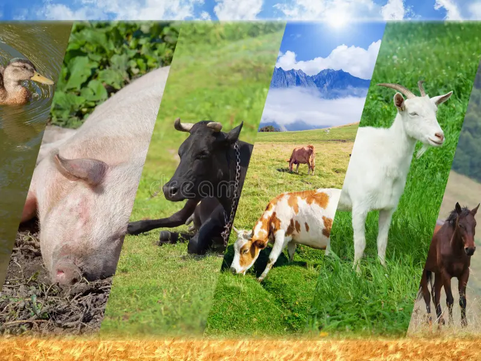
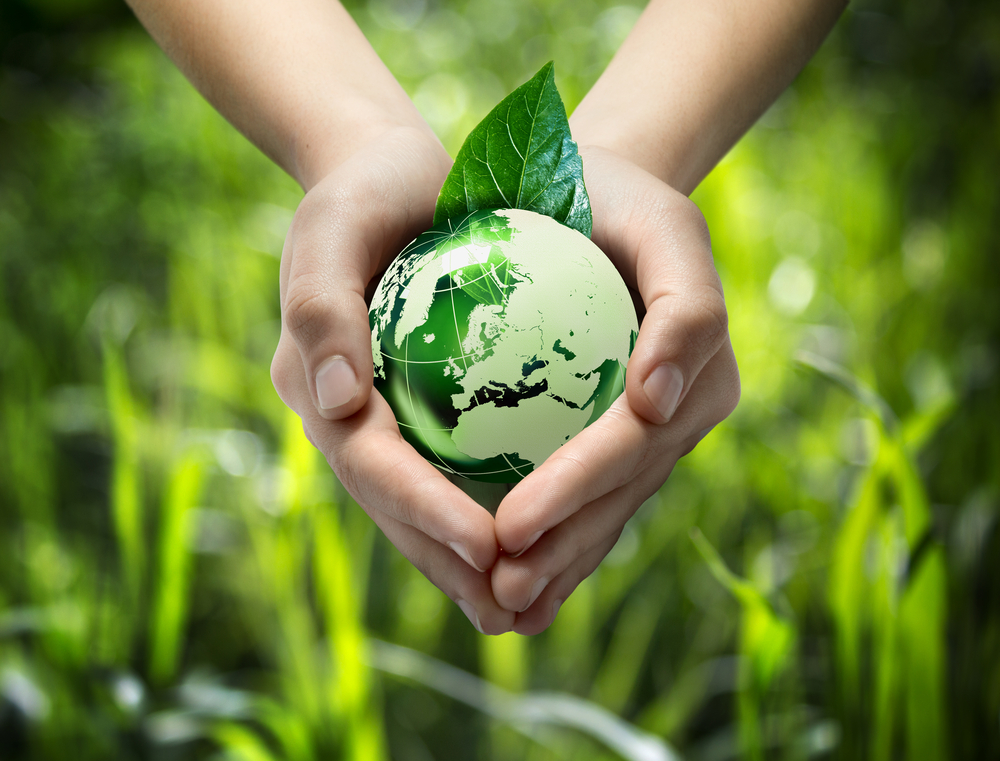

Overview
Crop production is a branch of agriculture, which includes the cultivation of crops in field cultivation,
vegetable
growing, fruit growing, etc. This industry gives necessary food. Consumer goods manufacturing and food
industries gets
raw materials.
Key Points
- The entire world depends on agriculture for its food.
- The soil should be loosened and aerated properly during crop production.
- Manures and fertilizers need to be added carefully.
- The crops should be irrigated periodically.

Overview
Livestock, farm animals, with the exception of poultry. In Western countries the category encompasses
primarily cattle,
sheep, pigs, goats, horses, donkeys, and mules; other animals, such as buffalo, oxen, llamas, or camels, may
predominate
in the agriculture of other areas.
Key Points
- Micro-livestock is the term used for much-smaller animals, usually mammals.
- Farming practices. Traditionally, animal husbandry was part of the subsistence farmer's way of life,
producing not only the food needed by
the family but also the fuel, fertiliser, clothing, transport and draught power. Killing the animal for
food was a
secondary consideration, and wherever possible their products, such as wool, eggs, milk and blood (by
the Maasai) were
harvested while the animal was still alive
- Predation. Livestock farmers have often dealt with natural world animals' predation and theft by
rustlers. In North America,
animals such as gray wolves, grizzly bears, cougars, and coyotes are sometimes considered a threat to
livestock.
- Disease. Livestock farmers have often dealt with natural world animals' predation and theft by rustlers.
In North America,
animals such as gray wolves, grizzly bears, cougars, and coyotes are sometimes considered a threat to
livestock.
- Transportation and marketing. ince many livestock are herd animals, they were historically driven to
market "on the hoof" to a town or other central
location. The method is still used in some parts of the world.

Overview
The word sustainable has become very popular in recent years, and it is now used to describe a lot of
things. But what
is sustainable agriculture? Simply put, sustainable agriculture is the production of plant and animal
products,
including food, in a way that uses farming techniques that protect the environment, public health,
communities, and the
welfare of animals.
Sustainable agriculture allows us to produce and enjoy healthy foods without compromising the ability of
future
generations to do the same. The key to sustainable agriculture is finding the right balance between the need
for food
production and the preservation of environmental ecosystems.
Key Points
- Crop rotation is one of the most powerful techniques of sustainable agriculture. Its purpose is to avoid
the
consequences that come with planting the same crops in the same soil for years in a row.
- Permaculture is a food production system with intention, design, and smart farming to reduce waste of
resources and
create increased production efficiency.
- Cover Crops
Many farmers choose to have crops planted in a field at all times and never leave it barren; this can
cause unintended
consequences.
- Soil is a central component of agricultural ecosystems. Healthy soil is full of life, which can often be
killed by the
overuse of pesticides.
- In order to maintain effective control over pests, it is important to view the farm as an ecosystem as
opposed to a
factory.